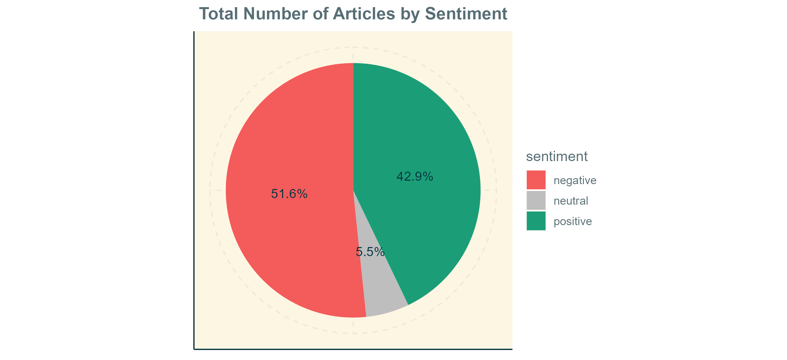
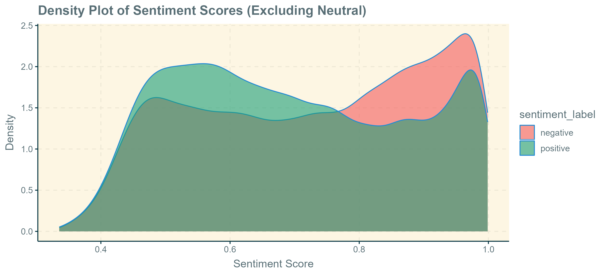
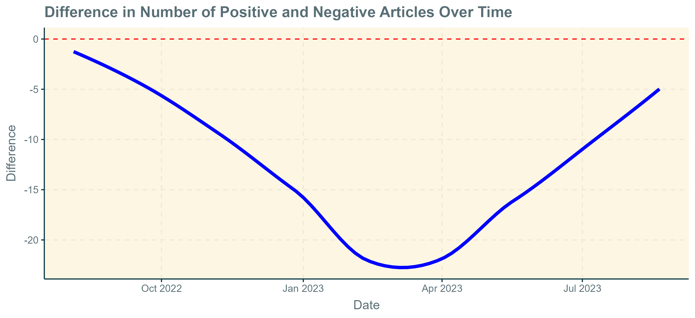
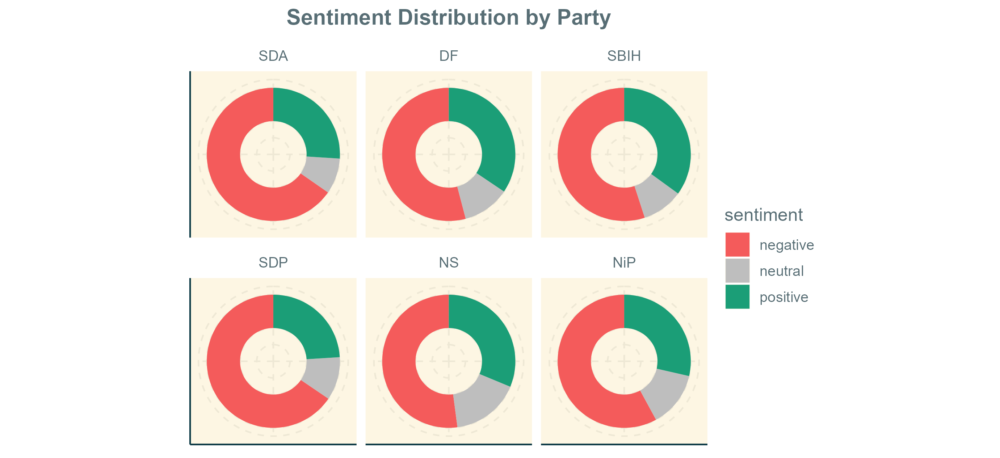
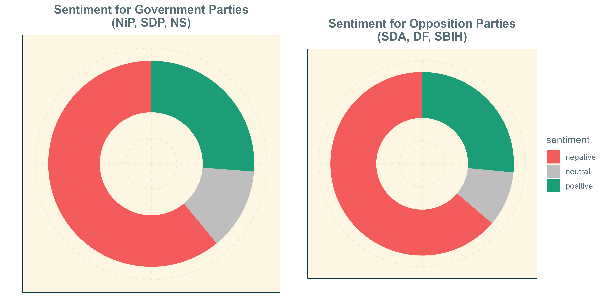

Septembar 2024
Više nego ikada ranije, ljudi se oslanjaju na internet za svoje dnevne vijesti i informacije. S brzim širenjem pristupa internetu širom svijeta, sve više ljudi se okreće od tradicionalnih, analognih medija prema društvenim mrežama poput Twittera i Facebooka, ili velikim online vijestima. S obzirom da su ovi internet portali postali glavni izvor informacija za većinu populacije, oni su prirodno od velikog interesa za društvene naučnike, koji žele saznati više o medijskom pejzažu i koje društvene prioritete taj pejzaž odražava.
Cilj ovog projekta je iskoristiti lako dostupne online podatke vijesti fokusiranjem na klix.ba, najposjećeniji i najutjecajniji portal vijesti u Bosni. Prikupljanjem, sistematizacijom i analizom svih vijesti na ovoj stranici, nastojim mapirati koje vrste vijesti Bosanci konzumiraju, te kako ih konzumiraju, pružajući jedinstven uvid u šire medijske trendove u zemlji. Razlog odabira Bosne je taj što su opći napori na prikupljanju i arhiviranju vijesti, koliko je meni poznato, uglavnom izostali, što naglašava važnost ovakvog rada u budućnosti.
Podaci su direktno preuzeti s klix.ba putem python web scrapper-a, napisanog pomoću BeautifulSoup-a. Analiza je zasnovana na ovim prikupljenim podacima, uz dodatnu početnu zbirku podataka koju je napravio Seferovic8. Sentiment oznake i ocjene su izračunate koristeći MoritzLaurerov model za višejezičnu klasifikaciju. Podaci se sastoje od 786.718 članaka vijesti u periodu od decembra 2002. do avgusta 2023.
Svi članci na klix.ba su svrstani u jednu od 7 kategorija - kratak pogled na ukupan broj vijesti po kategorijama otkriva da većina članaka pripada kategoriji "Vijesti", odnosno općoj kategoriji vijesti. Iznenađujuće, kategorija "Sport" je druga najveća kategorija, i čini više od 20% svih članaka na klix.ba, što ukazuje na značajan interes za sportske vijesti. Pored kategorije "Magazin", koja obuhvata izvještavanje o kulturnim događajima i čini oko 12% svih članaka, sve druge kategorije zauzimaju mali dio prostora.
**Ispod se nalaze dva interaktivna widgeta mape koja prikazuju sva spomenuta mjesta, zajedno s tačnim brojem spominjanja članaka po mjestu. Mapa 1 omogućava zumiranje unutra i van, dok Mapa 2 skalira oznake mjesta prema ukupnom broju.
Mapa ispod prikazuje opštu geografsku distribuciju spominjanja članaka preko svih pomenutih imena mjesta. Drugim riječima, mapa pokazuje koja područja zemlje dobivaju najviše medijske pažnje. Čini se da je medijska pažnja uglavnom usmjerena prema središnjoj Bosni, preciznije kvadrantu Sarajevo-Tuzla-Doboj-Travnik. Ovo je daleko najnaseljenije područje u zemlji, i također najekonomičnije razvijeno izvan samog glavnog grada. U suprotnosti s ovim, područja Bosne koja dobijaju najmanje medijske pokrivenosti su periferne dijelove zemlje, poput zapadne Bosne, sjeverne Bosne (osim Brčkog) i istočno-jugoistočne Bosne. Jedan važan izuzetak od ovog pravila je regija Krajina, tj. sjeverozapadni dio Bosne, gdje su mjesta poput Bihaća, Velike Kladuše, Cazina, Bužima i Krupe često spominjana u medijima.
 ---
**
---
**Kako izgleda medijsko praćenje političke scene? S obzirom na to da je politički sistem u Bosni notorno složen, bilo bi zanimljivo vidjeti kako medijski pejzaž odražava tu složenost. Osim toga, Bosna se nalazi prilično nisko na većini indeksa slobode štampe, (Svjetski indeks slobode štampe), usporediva s drugim zemljama istočne Evrope, a često se iznose zabrinutosti oko pristranog izvještavanja i pristupa medijskom prostoru. U tom svjetlu, relevantno pitanje je koliko često se bosanske političke stranke spominju u novinskim člancima na klix.ba.
Grafikon ispod prikazuje broj spominjanja članaka po političkoj stranci na godišnjem nivou. Kao što grafikon pokazuje, pokrivenost političkih stranaka je značajno i konzistentno raznolika, s nijednom strankom koja ne predstavlja više od 50% ukupnih političkih članaka u bilo kojem trenutku. Neke stranke, međutim, privlače više medijske pažnje od drugih - SNSD, SDP i SDA se često spominju, naglašavajući njihovu ulogu kao najvećih stranaka u Bosni. SDA posebno prima najviše pažnje od svih stranaka, što je razumljivo s obzirom na to da SDA redovno dobiva najviše glasova od svih stranaka u Bosni. Iznenađujuće je da mnogi članci svake godine također spominju HDZ, uprkos tome što HDZ predstavlja mnogo manji segment biračkog tijela u poređenju sa SDP-om ili SNSD-om. Ovo možda odražava važan politički položaj HDZ-a kao predstavnika hrvatske manjine u Bosni.
 ---
**
---
**Prelazeći na analizu sentimenta, važno je naglasiti da cijeli tekstualni korpus nije klasificiran u kategorije "negativno", "neutralno" i "pozitivno". Samo 55.000 članaka je prošlo kroz klasifikator, pokrivajući period od avgusta 2022. do avgusta 2023. Posmatrajući agregatnu količinu pozitivnih, negativnih i neutralnih članaka, vidimo da članci koji imaju negativan sentiment čine približno 50% svih vijesti. Uprkos široko rasprostranjenom dojmu da su vijesti neproporcionalno fokusirane na negativne događaje, kao što su politički skandali, međunarodni konflikti ili prirodne katastrofe, podaci pokazuju da vijesti nisu previše nagnute ka negativnom sadržaju.
Umjesto grubih kategorizacija negativnog i pozitivnog, gustinski grafikon ispod pokazuje distribuciju članaka po ocjenama sentimenta. Sentiment ocjene su mjera koliko se precizno članak može kategorizirati kao negativan ili pozitivan (veće brojke znače veću preciznost). Zanimljivo je da distribucija negativnih članaka ima izrazitu lijevu asimetriju, što znači da značajan dio negativnih članaka zaista ima vrlo negativan ton, u poređenju s ravnomjernijom distribucijom pozitivnih članaka. Suštinski, ima otprilike jednako pozitivnih i negativnih vijesti u medijima - ali negativne vijesti su nedvosmisleno negativne, dok su pozitivne vijesti manje izraženo pozitivne. Ovo može objasniti uobičajeni dojam da mediji favoriziraju izvještavanje o negativnim događajima.
Razlaganje broja pozitivnih i negativnih vijesti tokom vremena otkriva neočekivan obrazac - podaci pokazuju nešto poput U-krivulje s obzirom na omjer negativnih naspram pozitivnih vijesti. Dok je otprilike jednako pozitivnih i negativnih vijesti tokom ljeta 2022. i ljeta 2023., negativne vijesti zauzimaju veći dio medijskog prostora u kasnoj zimi i rano proljeće 2023., s prosjekom od 25 više negativnih nego pozitivnih članaka dnevno.
Još jedan zanimljiv pravac istraživanja jeste ispitivanje sentimenta vijesti u vezi s praćenjem političkih stranaka. Istraživanje u kojoj mjeri mediji disproporcionalno izvještavaju negativno o nekim strankama u poređenju s drugim strankama, pitanje je koje je izazvalo mnogo neslaganja na političkoj sceni u Bosni posljednjih godina. Lider stranke Narod i Pravda i trenutni ministar vanjske politike, Elmedin Konaković, posebno je glasno iznosio optužbe o pristranosti medija, tvrdeći da novinari s niza online portala nepravedno ciljaju stranke vladajuće koalicije.
Da bih empirijski provjerio ovu tvrdnju, identifikovao sam sve novinske članke koji spominju svaku od šest najvećih političkih stranaka u Bosni, a zatim izračunao procenat negativnih, pozitivnih i neutralnih članaka za svaku stranku. Kao što grafikon ispod pokazuje, postoji vrlo mala varijacija u procentu negativnog medijskog praćenja među strankama. Dvije stranke, SDA i SDP, dobivaju relativno veći broj negativnih medijskih izvještaja - ovo se može pripisati njihovom statusu kao najstarijih i historijski najutjecajnijih političkih stranaka u Bosni. S obzirom na njihovu historiju, obje stranke imaju više političkih skandala povezanih s njihovim imenom, u poređenju s četiri druge, novije stranke. Važno je napomenuti da nema dokaza koji bi podržali optužbe koje je iznio Konaković - NiP nije meta većeg broja negativnih izvještaja u poređenju s drugim strankama. Zapravo, oni primaju nešto manje negativne pokrivenosti od svog glavnog rivala, SDA.
Direktniji test Konakovićevih tvrdnji bio bi izračunati procente sentimenta grupiranjem tri glavne stranke vladajuće koalicije (kolokvijalno poznate kao Trojka) i uporediti ih s tri glavne opozicione stranke. Kao što grafikon ispod ilustruje, praktično ne postoji razlika u agregatnom sentimentu između ova dva bloka. Stranke vladajuće koalicije kolektivno dobivaju otprilike isto toliko negativnog i pozitivnog izvještavanja kao i opozicione stranke. Optužbe o široko rasprostranjenoj pristranosti medija koje je iznio Konaković ne izdržavaju kritičko ispitivanje.
